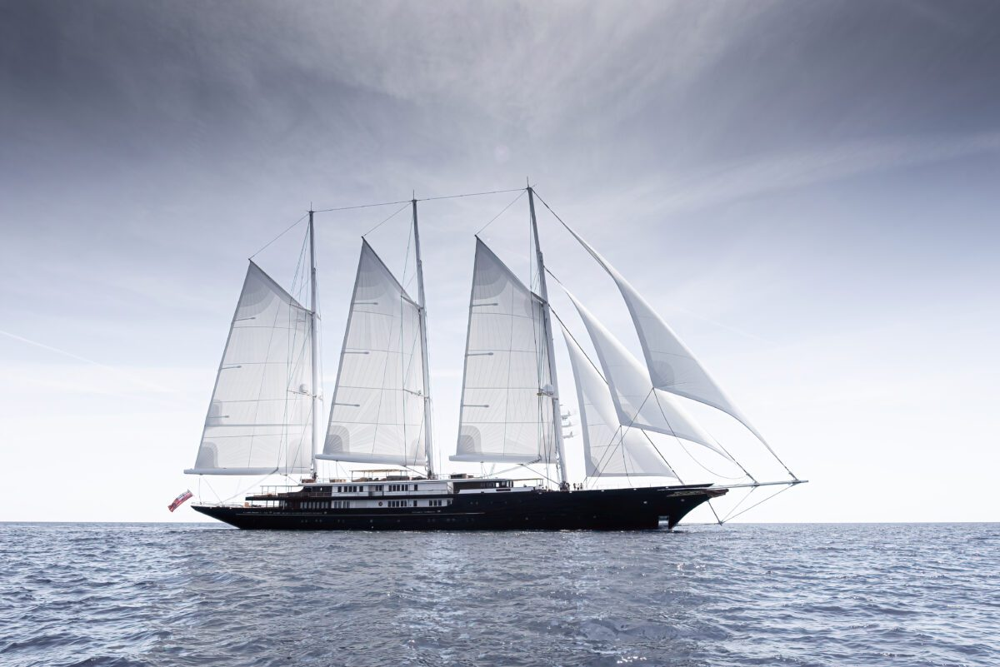

1
Map the handover path
List critical onboard systems, vendor owners, data points, test steps, and approval evidence for one active build or refit.

For Oceanco engineering
A small software squad can help your engineers test vendor systems earlier, capture better handover evidence, and keep sea-trial issues from becoming late onsite surprises.
Saw you are hiring a Commissioning Engineer. That role points to a busy handover moment, where yacht systems, co-makers, sea trials, and documentation must line up cleanly.
The Commissioning Engineer role tells us Oceanco is adding capacity where engineering becomes delivery. The hard part is not one system. It is many yacht systems, co-makers, owner teams, and test records moving together. If software defects appear late, sea trials can slow down. Handover then depends on manual evidence and urgent fixes.
List critical onboard systems, vendor owners, data points, test steps, and approval evidence for one active build or refit.
Build smoke tests for selected software interfaces, so common faults are found before final onboard validation.
Connect test results, deviations, punch-list items, and owner notes into one simple commissioning record.
Define clean telemetry events that later support Life Cycle Support and predictive maintenance work.
Elinext is a full-cycle software development company, active since 1997, with about 700 in-house specialists and no freelancers. We build web, backend, mobile, embedded, QA, AI/ML, and DevOps work for demanding teams. We hold ISO 9001 and ISO 27001 certifications. Our customer history includes Siemens, Broadcom, TRUMPF, Volkswagen, and TUI. For Oceanco, that means a stable remote squad can handle software tests while your teams own final onboard sign-off.

Elinext formed several focused teams to modernize and integrate an industrial system with long-term support.
Read case study
Elinext built embedded vehicle software that connected media, voice, location, maps, and background services.
Read case study